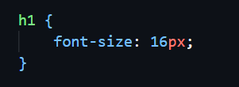
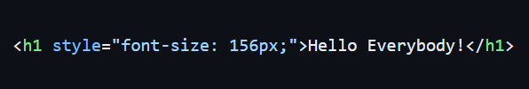
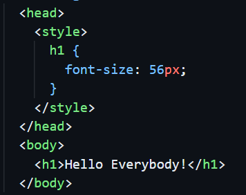
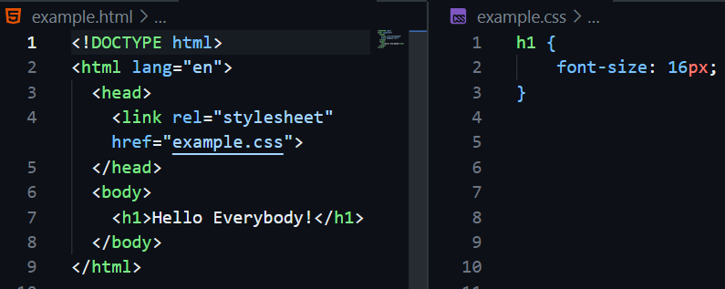
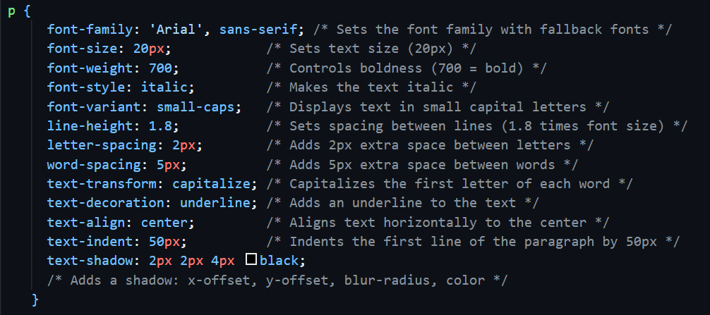

Introduction to CSS
What is CSS?
CSS stands for Cascading Style Sheets. It is used to style and design the layout of a webpage written in HTML.
CSS Syntax
- h1 is selector.
- font-size is property
- 16px is value.
- font-size: 16px is a declaration.
Here:
Three ways to add CSS
There are three ways to add CSS to a webpage.
Inline CSS
Apply styles directly to an HTML element using the style attribute.
- Quick changes – Useful for small adjustments.
- Targets individual elements – Good for unique styling.
Advantages:
- Code repetition – The same style must be rewritten multiple times.
- Hard to maintain – Difficult to update in large projects.
- Bad for SEO & performance – Increases HTML file size.
Disadvantages:
Internal CSS
Apply styles inside a <style> element in the <head> section of an HTML file.
- Single-file management (HTML + CSS together).
- Better than inline CSS for multiple elements.
- Faster loading than external CSS (no extra HTTP request).
Advantages:
- Can make HTML file larger.
- Only works on one HTML page.
- Harder to maintain in large projects.
Disadvantages:
External CSS
Apply CSS rules in a separate .css file and linked to HTML documents.
- Easy to maintain.
- Better separation of concerns.
- Faster page loading (cached by browser).
- Consistent styling across multiple pages.
- Improved SEO (cleaner HTML structure).
Advantages:
- Extra HTTP request required (minimal impact with caching).
Disadvantages:
** This is the most professional and maintainable approach for styling websites.
CSS Selectors
- Universal Selector: * { margin: 0; }
- Element Selector: p { color: red; }
- ID Selector: #header { background: blue; }
- Class Selector: .box { border: 1px solid; }
- Group Selector: h1, h2 { color: green; }
- Descendant Selector: div p { color: purple; }
- Child Selector: div > p { color: orange; }
- Adjacent Sibling: h1 + p { color: brown; }
- Pseudo-classes: a:hover; first-child, last-child, nth-child(odd/even/1/2n/2n+1), nth-last-child(2)
- Pseudo-elements: input:focus, p::before, p::after
- Attribute Selector: input[type="text"] { color: orange; }
ID is used to style a single, unique element. Can't use the same id for multiple elements.
Class is used to style multiple elements with the same styling. Can apply the same class to many elements, and an element can have multiple classes.
CSS Colors
- Named colors: { color: white; }
- Hex: { color: #fffff; }
- RGB: { color: rgb(255, 255, 255); }
- RGBA: { color: rgba(255, 255, 255, 0.65); }
- HSL: { color: hsl(0, 0%, 100%); }
- HSLA: { color: hsla(0, 0%, 100%, 0.65); }
CSS Units
- Absolute: px, cm, mm, in.
- Relative: %, em (relative to parent), rem (relative to root), vh (viewport height), vw (viewport width), vmin (viewport minimum), vmax (viewport maximum).
Text & Font Styling
Font Usage Tips
- Google Fonts: Use <link> in HTML head or @import in .css file.
- Local Font Files: Download .ttf or .woff file and use @font-face.
- Fallback Fonts: Always add backups like sans-serif or serif.
- Consistency: Use only 1–2 fonts across the entire website.
- Responsive Font Size: Use em, rem, or vw units instead of fixed px.
CSS Box Model
The fundamental concept of calculating the total size (height and width) of an element is called the Box Model. According to the CSS Box Model, every HTML element is treated as a rectangular box consisting of 4 parts:
Content: The actual text, image, or other content inside the element.
Border: The border is the outer edge of an element. It is the line that surrounds the content and padding of an element.
Padding: Padding is the space inside the border of an element. It increases the space between the content and the border.
Margin: Margin is the space outside the border of an element. It creates space between the element and other elements around it.
How CSS calculate the size of an element?
In CSS, the total width and height of an element depend on the box model. By default, elements use the content-box model, where the width property only applies to the content area. Any padding or border you add increases the actual size of the element.
For example:
If an element has a width of 100px, 20px padding on both the left and right, and a 2px border on each side, the total width is calculated as follows:
Total Width = content width + left padding + right padding + left border + right border
Total Width = 100px + 20px + 20px + 2px + 2px = 144px
This means the element will occupy 144px of space instead of the 100px you set. This is why we use 'box-sizing: border-box'. When border-box is applied, the specified width (100px in this case) includes the content, padding, and border.
The total width stays 100px, but the content area shrinks to make room for padding and borders. For example: Content width = 100px - (20px + 20px) - (2px + 2px) = 56px. Using border-box makes layout design simpler and more predictable.
CSS Background
- background-color: Sets the background color.
- background-image: url("image.jpg"); Sets a background image (can be used multiple images).
- background-repeat: Controls image repetition ('repeat', 'no-repeat').
- background-position: Sets the position of the image (e.g., 'center', 'top-right', '10px 20px').
- background-size: Sets the size of the image (e.g., 'cover', 'contain', '100px 200px').
- background-attachment: Scroll behavior ('scroll', 'fixed', 'local').
How to add an overlay to a background-image?
There are several ways to do so:
- background-blend-mode: Add a bg-color then use blend-mode (eg. 'multiply', 'lighten').
- border-image: Add a bg-image (linear gradiant), then fill 1.
- before/after:: Use z-index or isolation:isolate.